Machine Learning and Market Expectations
Bitcoin has been a hot topic. It seems it will stay like that for a long time. The biggest mystery about Bitcoin is definitely its price. Is it going to increase or not?
Most likely, it will… At least, that is what I think. But what about others? What do the majority think? And more interestingly, what do the machines think? I will answer these questions in this article by combining the opinions of two sides.
According to fundamental economics, prices of tradable assets like Bitcoin are affected heavily by the expectation and demand in the market. A buyer buys something only if s/he thinks it can be sold for more. Considering that, it becomes crucial to know the general opinion of an item to make relatable price predictions.
However, it would be too naive to think it is possible to make accurate price predictions by just looking at the demand or the expectation. For an acceptable accuracy rate, we would need complex tools to find patterns in price and analyze the market. Luckily, machine learning algorithms can do that for us.
Project Plan:
I plan to collect data representing the level of interest in the internet and the general idea about Bitcoin to make predictions. Then, I will utilize a model primarily used for time-series forecasts, LSTM Neural Network. Step by step, I will;
- Collect and process the data from different sources
- Merge everything into a data frame
- Feed the data to the machine-learning model
- Evaluate the predictions
- Create a price predictor application
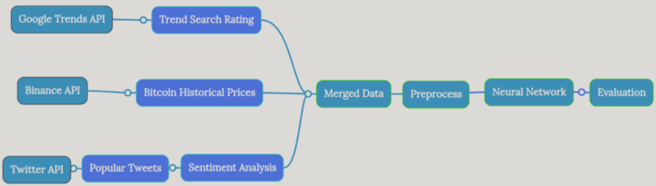
Explaining the details in coding would take too long if I tried it in this article. Therefore, if interested, check the code with explanations here.
Collect Data:
Economics says demand for an asset is generally positively correlated with positive expectations. But how do I measure expectations?
Social media… I can clearly see what people think of a term on social media. So, I collected tweets from Twitter and search trends from Google to measure the expectations for Bitcoin.
The core of this project is price data. I collected data for price, volume, and volatility from Binance API. This API provides continuous real-time data in the desired time interval(E.g., daily, 1 hour,4 hours, etc.) for the specified period. (E.g., Four months of data)
Collecting data from APIs gives the project a dynamic structure so the results can be renewed with a proper pipeline as long as the fundamental assumptions are kept.
Google Search Trends
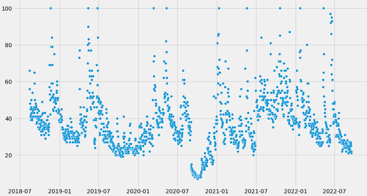
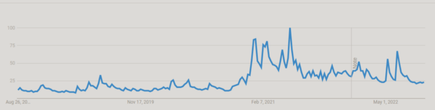
Google Trends graph reflects the level of interest in Bitcoin for a specific time interval and location. I collected data for the past 4 years over the world.
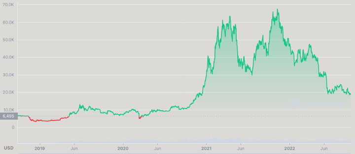
There seems to be a correlation between interest and price when the peaks of the charts are checked. It would be a mistake to think that search ratings only increase as the price increases. Search ratings may spike when big drops in price happen because people get curious about what happened.
The data is collected using the pytrends library on python. Here is a small part of my code attributed to data collection through pytrends. The code is available on GitHub.
Twitter Sentiment Analysis
Another indicator of demand for Bitcoin is how the majority feel about Bitcoin. If the expectations are positive, it can be assumed that the price will increase, except for classic market manipulations.
To measure the sentiment about Bitcoin, I collected all tweets with more than 1000 likes posted in English within the last 4 years. I filtered the tweets by the like numbers because there are millions of spam tweets on Twitter. Collecting spam tweets would take a tremendous amount of time and damage the quality of the data.
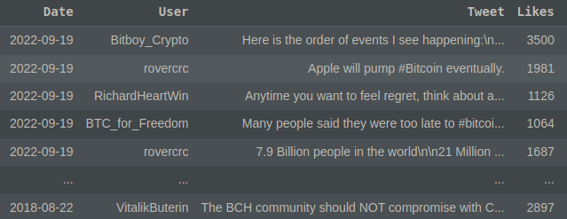
After collecting the tweets, I measured the sentiment of each tweet in terms of positivity and negativity by using an NLP algorithm called VADER. VADER returns a numerical value between 1 and -1. This range represents the strength of positivity or negativity of the tweet. Numerical values are the optimal input type for machine learning algorithms.
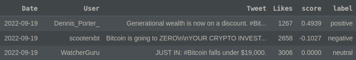
I grouped the data by day and summed the scores of each shared tweet on the same day. This way, I got an aggregated numerical value representing the general sentiment each day for Bitcoin.
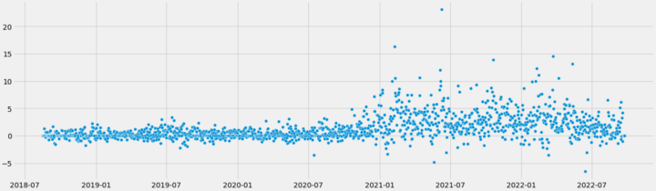
When the raw data was plotted, the chart was spiky and chaotic. I took 50 days average of the chart to smooth the output. Averaging the values revealed the similarity between the price and sentiment score charts. Here is how the 50-period moving average chart of sentiment score looks.
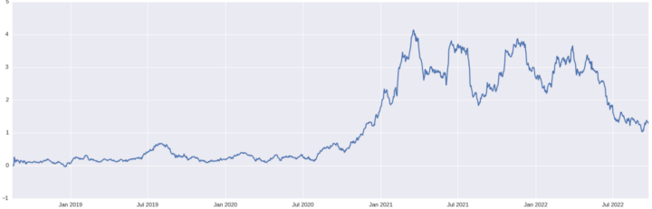
Bitcoin Historical Prices
When the raw data was plotted, the chart was spiky and chaotic. I took 50 days average of the chart to smooth the output. Averaging the values revealed the similarity between the price and sentiment score charts. Here is how the 50-period moving average chart of sentiment score looks.
Merge The Data Frames
I had softcoded a ‘start_date’ and an ‘end_date’ for the time range I wanted to work on. The data I collected from different sources were within the same range.
‘start_date’ = Current date — 1500 days
‘end_date’ = Current date
Since the time interval was the same for each data frame, it was relatively easy to merge all into one data frame. After the merge, I created a pipeline that creates a data matrix with the size n*k. ‘k’ represents the number of features, and ’n’ represents the number of previous days I want to take data from.
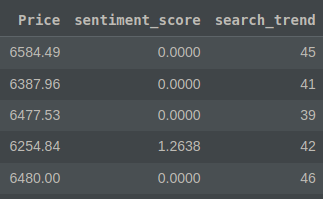
The features are Bitcoin price, Twitter sentiment score, and Google search trend rating meaning that k is always 3 for this data frame. E.g., If the matrix size is 14*3, the model takes data from the past 14 days and uses these 52 pieces of data to make tomorrow’s price prediction.
The entire data frame includes 1500 rows; test and validation data frames are given 150 rows each.
Train data = 1200 days
Validation data = 150 days
Test data = 150 days
Modeling
Long Short Term Memory(LSTM) Neural Network is arguably the best neural network type for making predictions on time-series data. This layer can forget unnecessary old parts in data. However, it still remembers what happened in the past and frequently repeated patterns. With this, the strict structure of the old data, incompatible with the new data, is avoided.
After a quick explanation of how the neural network works, I leave the code here,
Evaluate The Predictions
The predictions and real values are compared in the chart below. The chart shows 50 days of price action.
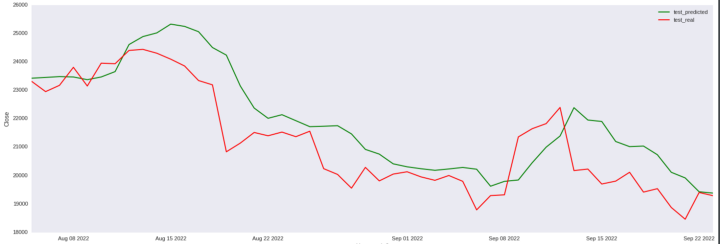
The matrix size that gives the minimum error is 7 * 3. For each prediction, the model takes data from the previous 7 days, combines all three features of these days, and estimates the next day’s price.
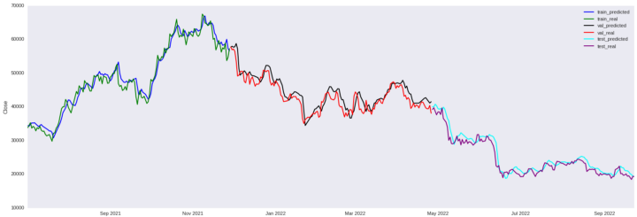
The scores on the test data when all features (‘Trends’, ’Sentiment’, ‘Price’) are included;
- Mean Squared Error: 1662883.374
- Root Mean Squared Error: 1289.528
- Mean Absolute Error: 963.547
- Mean Absolute Percentage Error: 0.03782
- R2 Score: 0.94821
- Mean Squared Error: 1103179.244
- Root Mean Squared Error: 1050.323435787
- Mean Absolute Error: 892.47843546
- Mean Absolute Percentage Error: 0.0317484
- R2 Score: 0.96432
Conclusion
This is a mini and simple demo of how to use different neural network algorithms in conjunction. I used NLP algorithms for sentiment analysis and time-series forecasting algorithms to make price predictions.
Although the sentiment analysis did not really contribute to the data, the article can be helpful for similar works. Consulting technical analysts about price action mechanisms and getting domain knowledge may help in terms of feature creation. Tuning parameters in detail can slightly increase the performance as well.
Suggestions from readers;
- Adding economic indicators like FED interest rates, inflation rates, money supply rates
- Market Whale Accumulation Data
- Spent Output Profit Ratio (SOPR)
- Other On-Chain Data
- Mining Costs
Disclaimer: I do not recommend trading by the results of this model. The model is not created for trading and is not tested for that purpose.